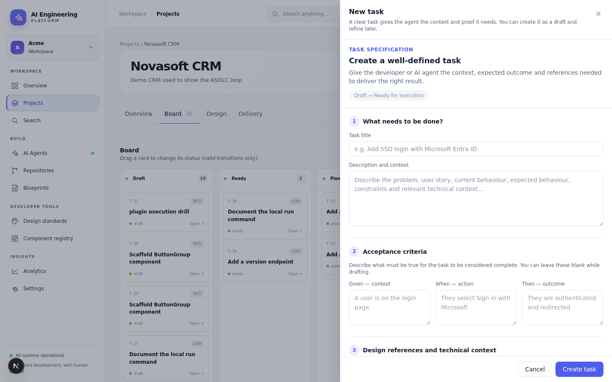

Tasks and board
The board is the source of truth for what the team is doing. It is deliberately not a prompt box.

Draft, Ready, Planning, In progress and Review columns. A card only moves when the transition is valid.
Columns
| Column | Meaning |
|---|---|
| Draft | Incomplete idea; an agent cannot start |
| Ready | Meets the definition of ready and can be planned |
| Planning | A planning run is active or waiting for approval |
| In progress | A development run has an approved plan |
| Review | A pull request is open and checks are running |
| Done | The change is merged and the task is closed |
A blocked task leaves the flow and records a reason. A human decides how to unblock it; the agent does not guess.
Definition of ready
A task becomes Ready when all of these are true:
- the title is an imperative sentence (
Add SSO login, notSSO) - at least one acceptance criterion uses Given/When/Then
- the affected area or packages are identified
- what is out of scope is stated when scope creep is a risk
- dependencies are listed, or explicitly none
- the work is small enough for one agent run
If a criterion is missing, the platform keeps the task in Draft. This is a feature, not friction.
Create a task
- Open the project and choose Board.
- Select + New task.
- Write the outcome and context. Include constraints, links and current behaviour.
- Add acceptance criteria.
- Add design references or technical context.
- Save as Draft. Move to Ready when the definition of ready is met.

The task drawer asks for acceptance criteria before it asks for a model.
Good task hygiene
- One outcome per task. Split large work.
- Write acceptance criteria as observable behaviour, not implementation steps.
- Link the design or component when the change affects UI.
- State what must not change; this prevents unrelated edits.
- Keep the description current. The run freezes the context it received.
Priorities and filters
Tasks have a priority and labels. Use the board filters to focus on a project, a status or a priority. The API exposes the same filters for automation.
Permissions
- Members can create and edit tasks in accessible projects.
- Viewers can read the board and task details.
- Admins can configure the definition of ready and required approvals at project level.